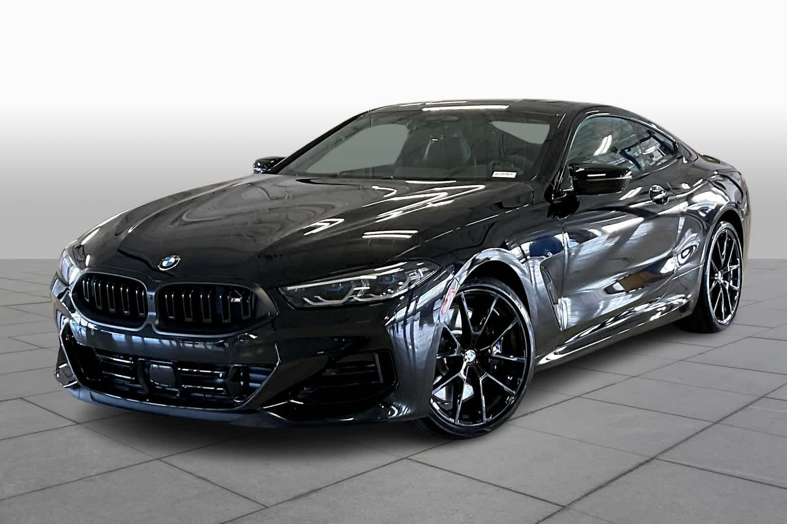
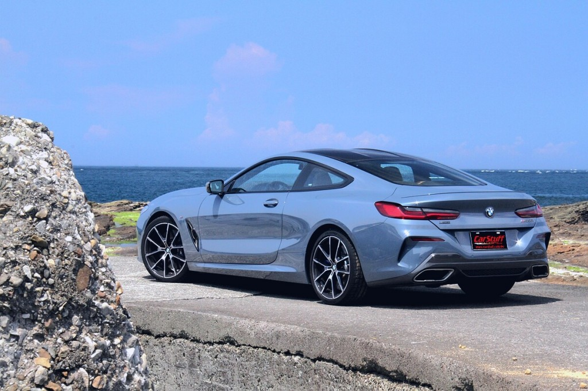

BMW 850i (2024)
 The BMW E31 is the first generation of the BMW 8 Series. It is a grand tourer built by BMW from 1990 to 1999 as a 2-door coupé, powered by either a V8 or V12 engine. Whilst it did supplant the original E24 based 6 Series in 1990, it was not a direct successor, but a new model class with a substantially higher price and performance than the 6 Series.
Manufacturer: BMW- Production: 1990-Present
- Assembly: West Germany
- Designer: Clause Kapitza
- Colors Available: Grey, Black, White, Blue
- Price: R 110,000 (Payment over 24 months available)